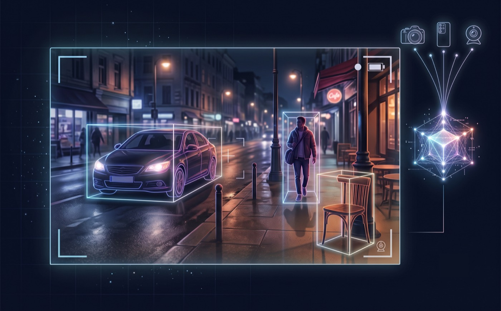

CAMDet — Camera-Agnostic Metric 3D Detection
CAMDet: camera-agnostic monocular 3D object detection from a single RGB image — real-time and edge-deployable across different cameras.

Overview
CAMDet works out where objects are in 3D — their size, distance and position — from a single ordinary photo, with no depth sensor. The catch it tackles: most single-image 3D detectors are quietly tuned to one specific camera, so pointing a different camera at the same scene drops their accuracy, because every lens “sees” the world a little differently.
Approach
It's a single transformer-based detector that predicts each object's 2D box, its distance, and its full 3D box together from one shared set of queries — reusing the predicted depth as the object's 3D centre. The key move is training the model to be robust to the camera itself, so one set of weights generalises to sensors it never saw during training instead of overfitting to the camera it was trained on.
Results
CAMDet beats strong prior methods at every model size and runs in real time — up to about 128 frames per second at its smallest scale. On cameras deliberately held out of training it outperforms a standard baseline by a wide margin, and the exact same exported model runs unchanged all the way from a desktop GPU down to a battery-powered edge device.
By the numbers
Tech stack & key skills
Core tools, methods and skills demonstrated in this project: